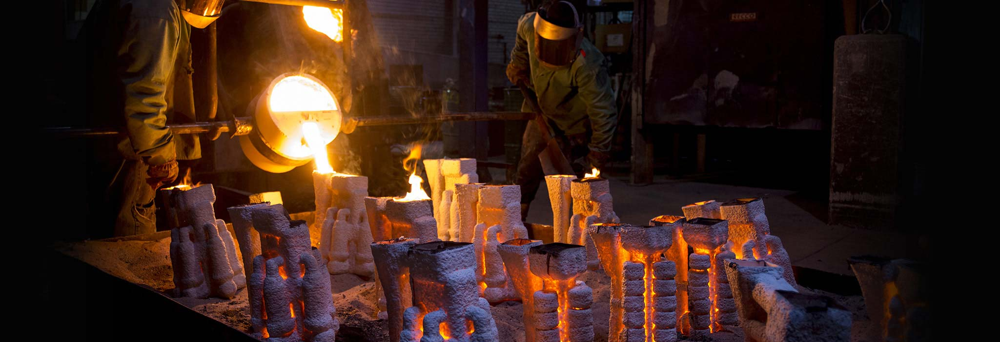

Investment Casting
Investment casting is one of the oldest and perhaps the most versatile of the casting processes. Most any castable metal is available, and very intricate shapes can be produced. Common applications include jewelry, turbine blades and veins, valve bodies, and myriad other industrial components.
The Process
A wax positive of the part to be cast is molded at low pressure in a tool. Investment cast tooling is generally made of aluminum. Advances in SLA technology has enabled the investment caster to produce the models without tooling for prototyping purposes. The wax part is then attached to a wax “tree” which enables multiples to be cast at the same time. The tree then has a shell built around it which is composed of ceramic and silica. After the shell has been built in multiple layers, it is then “dewaxed” typically by placing it in a steam autoclave. The wax positive has now formed a cavity in the shell.
The shells are then fired in a furnace in order to burn out any remaining wax residue as well as to prevent the shell from cracking when exposed to molten metal. The shells are then poured with the specified alloy and allowed to cool. The shell is then mechanically removed from the tree and castings. Castings are then cut off of the tree and the tree material is recycled for the next pour. Grinding and machining operations are generally used to clean up the areas of the part where the metal entered, commonly known as the gate witness area.
Design Considerations
- General Tolerance – +/- .010” for the first inch, +/- .005 per inch thereafter
- Wall Thickness - Dependent on part configuration. .125” min is a good guideline for ferrous materials.
- Radii – 1/64” to 1/32” for all internal and external corners is preferred.
- Finish – 125 micro inch typical
- Avoid deep blind holes – These often require the use of cores which add cost. Often it is less expensive to drill blind holes as a secondary machining operation.
Purchasing/Economic Considerations
Cavitation – Multiple cavity tooling results in a lower cost per part, yet a higher tooling cost. Volume and the expected life of the part are the prime considerations here.
Features - Part features to be formed by slides can save a secondary operation but increase the cost of the tool. Such features also increase the complexity of the die and naturally can affect its reliability.
Tool life – Aluminum tooling is usually good for 50,000-100,000 cycles (shots) before wear will start to become evident. Wear normally begins to show up in corners and fine detail in the part such as raised letters. Assume twice the tool life for hot chamber tooling. Less heat, less pressure, longer life.
Ownership – Die cast tooling is generally the property of the customer. Be aware if buying insert type tooling which fits into standard sized die sets. Not every die caster will have the die set that will enable your tooling to work. Dies are built to work in a certain tonnage (locking pressure) rated machine. Records should always be kept on the exact machine that your tooling is designed to run on. In terms of high speed zinc tooling, there are a myriad of machine models in the industry many of which are proprietary to a particular caster.
How We Can Help
How do I know that the metal specified is what is being poured? Does it make sense to employ a ceramic core to form a hole, or drill the hole as a secondary operation? What rapid prototyping options are available through the investment casting process? Send us your drawing and we can answer these questions and many more.